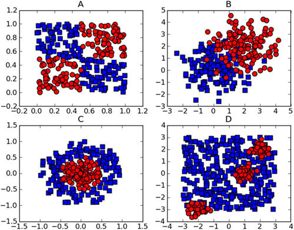
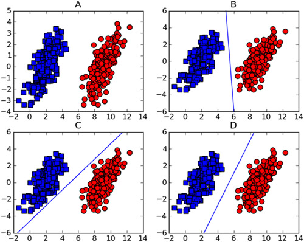
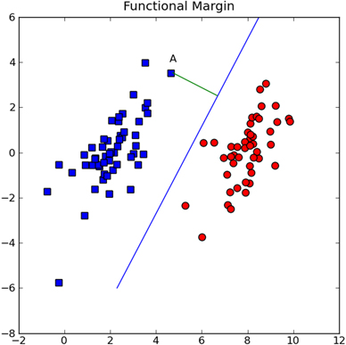

这一章的内容非常多，在神经网络大火前，SVM是最优秀的机器学习算法，尽管现在已经很少用了，但作为一本七年前的书还是很详细的讲解了，所以这里简单的记录下。
基于最大间隔分隔数据
支持向量机
优点：泛化错误率低，计算开销不大，结果易理解
缺点：对参数调节和核函数选择敏感，原始分类器不加修改仅适用于处理二分类问题
适用数据类型：数值型和标称型数据

观察上图图发现我们不能画出一条线或者圆把圆形和方形的数据分割开，而下图可以画出一条直线将两组数据分开。所以下图的数据称为线性可分（linearly separable）。

将数据集分开的直线称为分割超平面（separating hyperplane）。上面给出的例子数据都在二维平面上，所以分割超平面是一条直线，如果所给的数据是三维的，那么分割数据的就是一个平面。如果数据集是一个1024维的，那就需要一个1023维的对象对数据分割。如果一个数据集是N维的，需要一个N-1维的超平面分割。
支持向量（support vector）就是离分割超平面最近的那些点。
寻找最大间隔
How can we measure the line that best separates the data? To start with, look at figure 6.3. Our separating hyperplane has the form wTx+b. If we want to find the distance from A to the separating plane, we must measure normal or perpendicular to the line. This is given by |wTA+b|/||w||. The constant b is just an offset like w0 in logistic regression. All this w and b stuff describes the separating line, or hyperplane, for our data. Now, let’s talk about the classifier.

分类器求解的优化问题
SVM应用的一般框架
SVM的一般流程
- 收集数据
- 准备数据：需要数值型数据
- 分析数据：有助于可视化分割超平面
- 训练算法：SVM大大部分时间都源自训练，该过程主要实现两个参数的调优
- 测试算法：十分简单的计算过程就可以实现
- 适用算法：几乎所有分类问题都可以适用SVM，值得一提的是，SVM本身是一个二分类分类器，对多分类问题SVM需要对代码修改
SMO高效优化算法
SMO表示序列最小优化（Sequential Minimal Optimization）
SMO算法的目标是求出一系列alpha和b，一旦求出了这些alpha，就很容易计算处权重向量w并得到分割超平面。
SMO算法的工作原理是：每次循环中选择两个alpha进行优化处理。一旦找到一
对合适的alpha，那么就增大其中一个同时减小另一个。这里所谓的合适们就是指两个alpha必须要符合两个条件，一，两个alpha必须要在间隔边界之外，二，两个alpha还没有进行过区间化处理或者不在边界上。
应用简化版SMO算法处理小规模数据集
$$\Sigma\alpha*label^{i} = 0$$
1 | def loadDataSet(fileName): |
1 | dataArr, labelArr = loadDataSet('MLiA_SourceCode/machinelearninginaction/Ch06/testSet.txt') |
[-1.0, -1.0, 1.0, -1.0, 1.0, 1.0, 1.0, -1.0, -1.0, -1.0]
selectJrand()有两个参数，i是第一个alpha的下表，m是所有alpha的数目，只要函数值不等于输入值i，函数就会随机选择
clipAlpha()的作用是调整alpha的值在H和L之间。
SMO伪代码大致如下：
创建一个alpha向量并将其初始化为0向量
当迭代次数小于最大迭代次数时（外循环）
对数据集中的每个数据向量（内循环）：
如果给数据向量可以被优化：
随机选择另外一个数据向量
如果优化这两个向量
如果两个向量都不能被优化，退出内循环
如果所有向量都没被优化，增加迭代数目，继续下一次循环
1 | from numpy import * |
1 | b, alphas = smoSimple(dataArr, labelArr, 0.6, 0.001, 40) |
L==H
L==H
iter: 0 i:2, pairs changed 1
iter: 0 i:3, pairs changed 2
L==H
...
...
iteration number: 39
j not moving enough
j not moving enough
j not moving enough
iteration number: 40
1 | b |
matrix([[-3.79661253]])
1 | alphas[alphas>0] |
matrix([[0.12629181, 0.24169497, 0.36797683]])
1 | shape(alphas[alphas>0]) |
(1, 3)
1 | supportVectors = [] |
[4.658191, 3.507396] -1.0
[3.457096, -0.082216] -1.0
[6.080573, 0.418886] 1.0
1 | import matplotlib |
圈出支持向量
1 | plotSupportVectors(supportVectors) |

利用完整的SMO算法加速优化
1 | class optStruct: |
1 | def innerL(i, oS, istraces=True): |
1 | def smoP(dataMatIn, classLabels, C, toler, maxIter, kTup=('lin', 0), istraces=True): #full Platt SMO |
1 | dataArr, labelArr = loadDataSet('MLiA_SourceCode/machinelearninginaction/Ch06/testSet.txt') |
fullSet, iter: 0 i:0, pairs changed 1
fullSet, iter: 0 i:1, pairs changed 1
fullSet, iter: 0 i:2, pairs changed 2
j not moving enough
...
...
fullSet, iter: 2 i:97, pairs changed 0
fullSet, iter: 2 i:98, pairs changed 0
fullSet, iter: 2 i:99, pairs changed 0
iteration number: 3
1 | supportVectors = [] |
[3.542485, 1.977398] -1.0
[7.55151, -1.58003] 1.0
[8.127113, 1.274372] 1.0
[7.108772, -0.986906] 1.0
[6.080573, 0.418886] 1.0
[3.107511, 0.758367] -1.0
1 | plotSupportVectors(supportVectors) |

如何用上面得到的alpha值来进行分类？首先必须基于alpha值得到超平面，计算w。
1 | def calcWs(alphas, dataArr, classLabels): |
1 | ws = calcWs(alphas, dataArr, labelArr) |
array([[ 0.65139219],
[-0.18666913]])
1 | datMat = mat(dataArr) |
matrix([[-0.94421679]])
如果该值大于0那么其属于1类，小于0则属于-1类。对于dataMat[0]点应该时类别-1，验证检查：
1 | labelArr[0] |
-1.0
写个函数全部检查一遍看看
1 | def checkResult(alphas, b, dataArr, labelArr): |
1 | checkResult(alphas, b, dataArr, labelArr) |
the error tate of this test is 0.000000
测试结果全部都分类正确
在复杂的数据上应用核函数
利用核函数将数据映射到高维空间
径向基核函数
1 | %run MLiA_SourceCode/machinelearninginaction/Ch06/plotRBF.py |

1 | def kernelTrans(X, A, kTup): #calc the kernel or transform data to a higher dimensional space |
1 | def innerL(i, oS, istraces=False): |
1 | def calcEk(oS, k): |
1 | def testRbf(k1=1.3): |
在测试中使用核函数
用加入了核函数的算法再次训练
1 | testRbf() |
fullSet, iter: 0 i:0, pairs changed 1
fullSet, iter: 0 i:1, pairs changed 1
...
...
fullSet, iter: 6 i:99, pairs changed 0
iteration number: 7
there are 29 Support Vectors
the training error rate is: 0.070000
the test error rate is: 0.050000
1 | testRbf(0.1) |
fullSet, iter: 0 i:0, pairs changed 1
fullSet, iter: 0 i:1, pairs changed 2
...
...
iteration number: 7
there are 89 Support Vectors
the training error rate is: 0.000000
the test error rate is: 0.070000
当k1=0.1时候，支持向量为89个，k1=1.3的时候时29个，当减小σ，训练错误率就会降低，但测试错误率就会上升。
支持向量的数目存在一个最优值。SVM的优点在于它能对数据进行高效分类。如果支持向量太少，就可能会得到一个很差的决策边界；如果支持向量太多，也就相当于每次都利用整个数据集进行分类，这种分类法发称为K近邻。
实例：手写识别问题回顾
基于SVM的数字识别
- 收集数据
- 准备数据：基于二值图像构造向量
- 分析数据：对图像向量进行目测
- 训练算法：采用两种不同的核函数，并对径向（radial direction）基核函数采用不同的设置来运行SMO算法
- 测试算法：编写一个函数来测试不同的核函数并计算错误率
- 使用算法
首先把第二章的img2vector()函数复制过来。
1 | def img2vector(filename): |
尝试不同的参数和线性核函数来学习：
1 | parameters = [['rbf', 0.1], |
iteration number: 1
iteration number: 2
iteration number: 3
...
...
iteration number: 9
there are 39 Support Vectors
the training error rate is: 0.000000
the test error rate is: 0.021505
1 | print("内核,设置\t训练错误率\t测试错误率\t支持向量数") |
内核,设置 训练错误率 测试错误率 支持向量数
rbf,0.1 0.0000 0.5215 402
rbf,5.0 0.0000 0.0323 402
rbf,10.0 0.0000 0.0054 132
rbf,50.0 0.0149 0.0269 31
rbf,100.0 0.0050 0.0108 34
lin,0.0 0.0000 0.0215 39
观察发现，最小的训练错误率并不对应最小的支持向量数，线性核函数的效果并不是特别糟糕。可以牺牲线性核函数的错误率来换取分类速度的提高。
总结
支持向量机时一种分类器，之所以称为“机”时因为它会产生一个二值决策结果，即它是一种决策“机”，支持向量机的泛化错误率较低，也就是说它具有良好的学习能力，并且学到的结果具有很好的推广性。
核函数从一个低纬空间映射到一个高纬空间，可以将一个低维空间中的非线性问题转换为高纬度空间下的线性问题来求解。
支持向量机是一个二分类器。当解决多分类问题时，则需要额外的方法对其进行扩展，SVM的效果也对优化参数和所用核函数中的参数敏感。